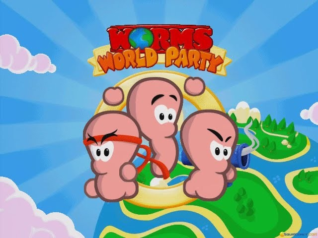
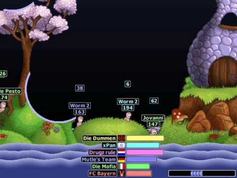
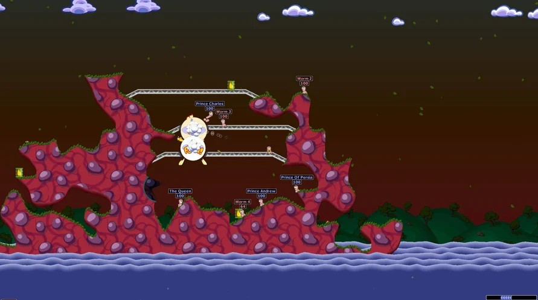
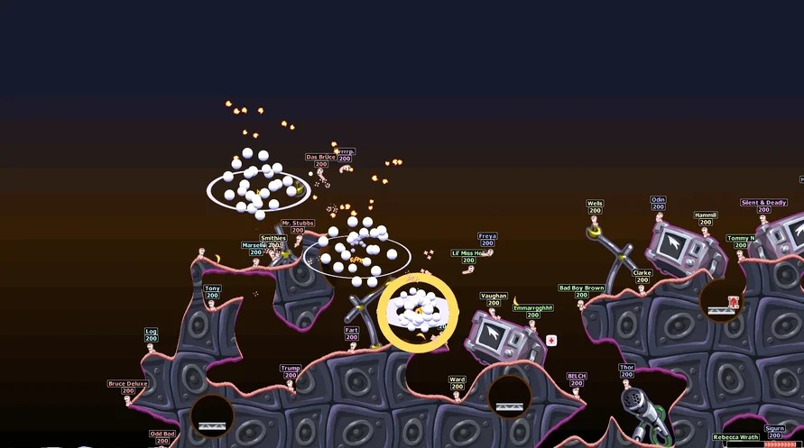

Sáng nay tớ lướt Youtube kiếm cái gì đó nghe, thì đập ngay vào mắt một cái icon quen thuộc đến giật mình: Gunbound. Game online đầu tiên tớ chơi trong đời.
Hồi đó tớ cày kinh khủng khiếp — cày đến mức có tiền, bán đồ trong game lấy tiền mặt để lại có tiền chơi tiếp, đúng nghĩa "lấy game nuôi game". Gunbound nổi đến độ thời đó tụi bạn không ai xin nick Yahoo, toàn xin nick Gunbound thôi.
Nhìn cái icon một lúc, tự nhiên tớ nhớ lại cái lần đầu tiên thấy Gunbound, hồi đó tớ mới lớp 9. Lúc đó tớ đã buột miệng nói "ủa sao giống Worms World Party vậy" — làm đứa bạn đứng cạnh ngơ ngác, hỏi game gì. Vậy là trước cả Gunbound, có một game bắn nhau theo lượt, canh góc canh gió y hệt vậy, mà tớ đã chơi từ hồi... còn sớm hơn nhiều.

Đó là hồi lớp 6, tớ chơi cùng hai thằng bạn thân — mà tới giờ vẫn thân. Đứa biết game này trước là thằng bạn có cái máy Pentium II ở nhà. Và để chơi được, tụi tớ phải canh đúng lúc nhà nó không có ai — ba đứa hẹn nhau, đợi bố mẹ nó đi vắng là đạp xe qua liền.
Lần đầu ngồi coi ba con sâu be bé nhảy tưng tưng trên màn hình, phát ra mấy tiếng nói nhí nha nhí nhố nghe vừa ngu vừa cưng, cả ba đứa cười rần rần. Cách chơi là theo lượt, ai tới phiên thì giành cái bàn phím, ba đứa vừa canh gió canh góc bắn vừa cãi nhau chí chóe giành lượt — kiểu "tới tao chưa, mày bắn xong chưa" liên tục.

Vũ khí là thứ làm tụi tớ nghiện. Nhớ nhất là quả bom cừu bay — bấm phát là một con cừu bay vòng vòng trên trời rồi rớt xuống nổ tan xác, lần nào ba đứa cũng hú lên như xem pháo hoa. Rồi có một chiêu tụi tớ hay gọi đùa là "súc thục" — bắn trúng phát là thằng kia bay biến mất tích luôn khỏi màn hình, kiếm xác không ra. Tên thật của nó là gì thì hơn hai mươi năm rồi tớ chịu, không nhớ nổi.

Nhưng buồn cười nhất, cười sặc nước miếng luôn, là mấy pha tự hủy — tự mình chơi ngu, tự bắn trúng mình, tự rớt xuống nước tự chết. Mỗi lần vậy là cả ba đứa cười lăn cười bò, quên luôn đang giận nhau vì tranh lượt. Ba đứa còn có trò đặt tên cho từng con sâu — mà đặt lộn tùng phèo hết, tên gì cũng có, giờ tớ không còn nhớ rõ tên cụ thể nào nữa, chỉ nhớ là chả theo quy tắc gì cả, ai ưng gì đặt nấy.
Worms World Party do hãng Team17 làm, ra mắt năm 2001 — châu Âu tháng 4, Mỹ tháng 6. Ban đầu nó chỉ định là một bản mở rộng chơi online cho máy Dreamcast, theo yêu cầu của Sega, nhưng Team17 nhận ra làm riêng cho một hệ máy thì không đủ lời, nên mở rộng ra PC và một loạt nền tảng khác. Đây cũng là game Worms 2D cuối cùng trước khi hãng chuyển hẳn sang đồ họa 3D với Worms 3D vài năm sau.
Lúc mới ra, game được đón nhận khá tốt — ở Anh nó còn được trao giải thưởng doanh số vì bán hơn một trăm nghìn bản. Nhưng càng về sau, cộng đồng Worms lại chia phe khá rõ: nhiều người thấy nó chẳng khác gì bản Worms Armageddon ra trước đó, không cải tiến bao nhiêu — game bị chê là "phiên bản online của cái đã có sẵn" nhiều hơn là một phần mới thật sự.
Điểm trừ cho công bằng: nếu so với các bản Worms sau này thì lối chơi gần như giữ nguyên, không có gì đột phá — cái hay nằm ở chỗ nó là cánh cửa online đầu tiên của dòng game, chứ không phải ở độ mới mẻ trong gameplay.
Rồi tụi tớ ngưng chơi từ lúc nào không rõ, cũng chẳng nhớ vì sao — có lẽ đơn giản là hết mê, chuyển sang thứ khác, như bao trò tuổi thơ khác cứ lặng lẽ trôi qua mà không ai để ý đó là lần cuối.
May là hai thằng bạn đó tới giờ vẫn còn thân với tớ, dù không còn ngồi chung một cái Pentium II tranh giành lượt bắn cừu bay nữa. Sáng nay chỉ vì một cái icon Gunbound lướt qua màn hình mà tớ lục lại được cả một mảng ký ức xưa hơn — chắc não người cũng có kiểu "combo phím tắt" riêng của nó.
Worms World Party hiện có bản Remastered trên Steam, chỉnh lại 1080p/60fps, có thành tựu và hỗ trợ tay cầm đàng hoàng. Thật thà mà nói thì đánh giá trên Steam khá lộn xộn, nhiều người kêu lỗi kỹ thuật vặt — nên nếu cậu định chơi lại, chuẩn bị tinh thần vá lỗi driver một chút, chứ đừng mong nó mượt như hồi xưa trên Pentium II đâu (mà hồi xưa nó cũng đâu có mượt, chỉ là mình dễ tính hơn thôi).